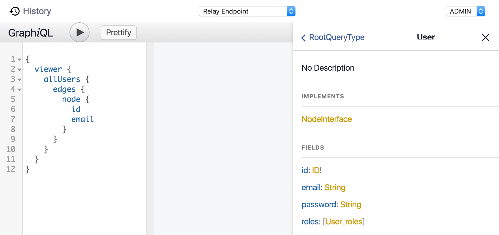

Getting Started
Modern tools like react and angular make it really easy to develop high quality UI for mobile and web applications. Graph.cool makes it just as easy to configure the backend api for your application without having to manage a server.
Overview
Graph.cool has two components:
The graph.cool dashboard is a web interface that allows you to easily set up and maintain the data structure for your application
The graph.cool api is a load balanced production ready api that you can use directly in your mobile or web application
Dashboard
The dashboard is available at dashboard.graph.cool. The first time you visit you will be guided through creating the model for a simple Todo application. This is the easiest way to get started with graph.cool and should be enough to get you going. If you need a more detailed walkthrough of all the features you can return to the documentation.
The dashboard includes a playground you can use to explore all the queries and mutations available. You simply write your query in the left pane and click the play button to execute it. Results are then returned in the right pane along with potential error messages.

The editor supports auto complete and hint as you type. Simply press ctrl+space to get a list of possible queries.
If you click on the Docs button on the right side you can see a hierachical list of all available queries and mutations